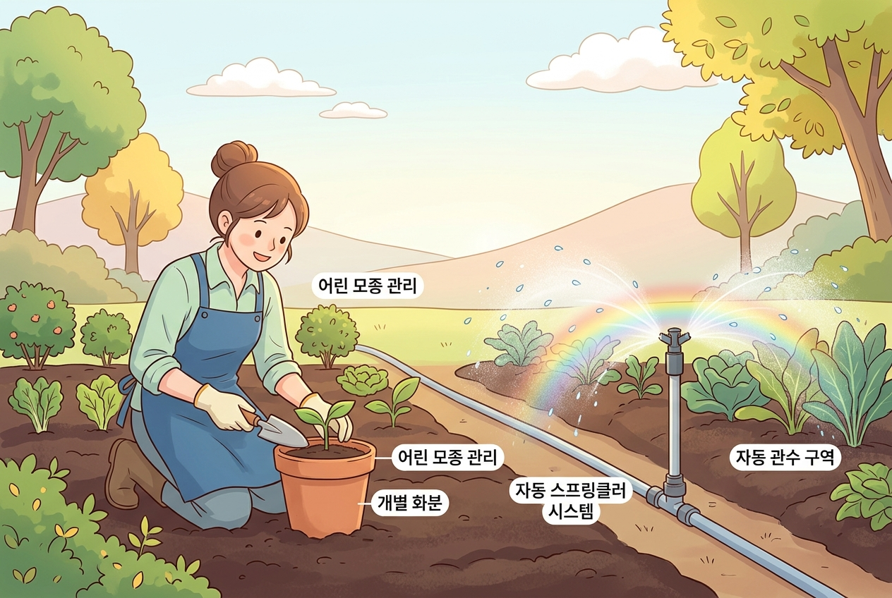

9차시: 내일로 — AI 시대 교사로서 나아갈 방향¶
🎯 이 장에서 배우는 것¶
- AI 시대에도 변하지 않는 교사의 핵심 가치를 인식할 수 있다
- 앞으로 AI를 활용한 수업 개선의 구체적 계획을 세울 수 있다
- 동료 교사들과 지속적으로 배움을 나눌 의지를 갖출 수 있다
왜 이걸 배우나요? 🤔¶
"오늘 배운 것이 내일의 수업을 바꾸려면, '끝'이 아니라 '시작'이어야 합니다."
연수가 끝나면 현실로 돌아갑니다. 이때 "그래서 나는 뭘 할 수 있지?"라는 질문에 답할 수 있어야 오늘의 경험이 진짜 배움이 됩니다. 이 시간은 그 답을 함께 만드는 시간입니다.
📚 핵심 개념¶
개념: AI 시대 교사의 역할 — "정원사와 스프링클러"¶
-
비유로 시작: AI는 정해진 시간에 정확한 양의 물을 뿌리는 스프링클러와 같습니다. 효율적이죠. 하지만 교사는 정원사입니다. 어떤 꽃은 그늘이 필요하고, 어떤 묘목은 지지대가 필요하다는 걸 아는 사람이에요. 🌱
-
정확한 정의: AI 시대 교사의 핵심 역할은 "기술을 도구로 활용하면서, 학생의 맥락을 읽고 관계 속에서 성장을 설계하는 전문가"입니다.
-
예시로 확인:
| 역할 | AI가 잘하는 것 🤖 | 교사만 할 수 있는 것 👩🏫 |
|---|---|---|
| 자료 제작 | 맞춤형 문제 자동 생성 | 학생의 표정을 보고 난이도 조절 |
| 피드백 | 빠른 채점과 통계 분석 | "네가 이 부분을 어려워하는 이유"를 공감 |
| 수업 설계 | 활동지·루브릭 초안 생성 | 우리 반 분위기에 맞게 재구성 |
핵심 메시지: AI는 교사를 대체하는 것이 아니라, 교사가 '진짜 교사다운 일'에 더 집중할 수 있게 해주는 조수(assistant)입니다.

🔨 따라하기: 나의 "AI 활용 수업 개선 계획" 세우기¶
Step 1: 한 문장으로 다짐 쓰기 ✍️¶
아래 문장을 완성해 보세요.
"나는 앞으로 _ 수업에서, AI를 활용하여 _ 을/를 시도해 보겠다."
예시: - "나는 앞으로 국어 수업에서, AI를 활용하여 학생 글쓰기에 1차 피드백을 빠르게 제공하는 것을 시도해 보겠다." - "나는 앞으로 수학 수업에서, AI를 활용하여 수준별 연습문제를 자동 생성하는 것을 시도해 보겠다."
Step 2: 실행 시점 정하기 📅¶
다짐은 구체적인 날짜가 있을 때 실현됩니다.
- 📌 첫 시도 시점: 이번 달 안에 한 번은 써보겠다 / 다음 단원부터 적용하겠다
- 📌 나눌 동료: 이 경험을 공유할 동료 선생님 한 분을 떠올려 보세요
💡 팁: 완벽할 필요 없습니다. "에듀플로에서 활동지 초안 하나 만들어보기"처럼 작은 것부터 시작하세요!
⚠️ 주의할 점¶
- "AI가 다 해주겠지"라는 환상은 금물! AI의 결과물은 항상 교사의 전문적 판단으로 검토·수정해야 합니다. 초안은 AI가, 완성은 선생님이! ✏️
- 혼자 고군분투하지 마세요. AI 도구는 계속 변합니다. 동료와 함께 시도하고 나누는 것이 가장 빠른 성장 방법입니다.
✅ 점검하기¶
1. AI 시대에 교사의 역할이 더 중요해지는 이유는 무엇인가요?
정답 확인
AI는 효율적인 작업(자료 생성, 채점 등)을 대신하지만, 학생의 맥락을 이해하고, 관계를 맺고, 성장을 설계하는 일은 교사만이 할 수 있기 때문입니다. AI가 '도구적 일'을 맡아줄수록, 교사는 '사람만이 할 수 있는 일'에 집중할 수 있습니다.2. 오늘 연수에서 배운 것을 실천으로 옮기기 위해 가장 중요한 것은?
정답 확인
구체적인 실행 계획(언제, 어떤 수업에서, 무엇을)을 세우고, 작은 것부터 시도하며, 동료와 경험을 나누는 것입니다.3. AI 활용 수업에서 교사가 반드시 해야 할 역할 한 가지는?
정답 확인
AI가 생성한 결과물을 교사의 전문적 판단으로 검토하고, 학생과 수업 맥락에 맞게 수정·보완하는 것입니다.📝 인터랙티브 퀴즈¶
1. AI 시대 교사의 역할을 비유한 것으로 가장 적절한 것은?
2. AI 활용 수업에서 교사가 반드시 해야 할 일은?
3. 오늘의 배움을 실천으로 옮기기 위한 가장 효과적인 방법은?
✍️ 서술형 문제¶
오늘 연수를 통해 가장 기억에 남는 한 가지와, 앞으로 자신의 수업에서 AI를 어떻게 활용하고 싶은지 구체적으로 작성해 보세요.
🎉 마무리 — 연수를 마치며¶
🔑 오늘 우리가 확인한 것¶
AI는 교사의 조수이지, 대체자가 아닙니다. 학생을 이해하고 성장을 설계하는 일은 오직 선생님만이 할 수 있습니다.
🚀 내일부터 할 수 있는 것¶
"활동지 초안 하나 만들어보기"처럼 작은 시도 한 가지를 이번 주에 실행해 보세요. 그것이 변화의 시작입니다.
🌟 "연수의 끝은, 수업 변화의 시작입니다."
선생님, 9차시 동안 함께해 주셔서 감사합니다. 오늘의 작은 경험이 내일 교실에서 큰 변화의 씨앗이 되길 응원합니다! 🌱